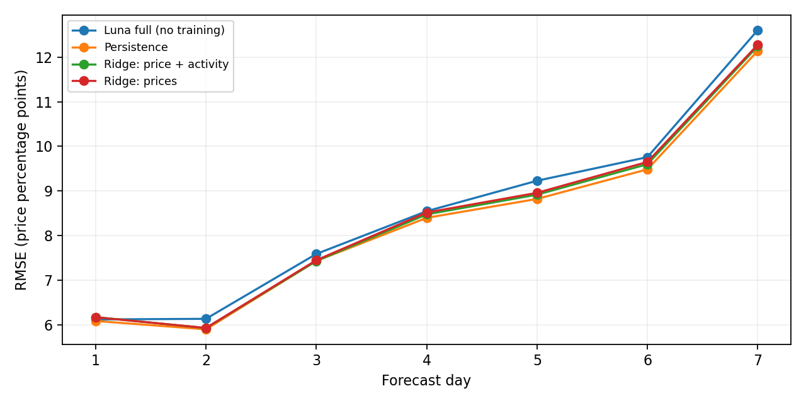

交易活跃度与异常活动
以固定日历窗口累计现金成交额；异常量与此前 7 日或此前四周相同 UTC 时间槽比较。长历史不足时保留缺失值，基线不包含当前桶。
ECONWM / DATA ATLAS V1
COLLABORATOR ACCESS
该页面用于 Economic World Model 项目协作。验证后，本浏览器会话将保持解锁。
ECONOMIC WORLD MODEL · POLYMARKET DATA ATLAS
我们从 763,126,566（约 7.63 亿）笔可信成交中重建 379,711（约 37.97 万）个事件、897,580（约 89.76 万）个市场命题的多尺度概率轨迹，并将其物化为统一的“历史信息—预测目标”样本，为单事件预测、跨事件检索与预测性关系验证建立数据和评估基础。
READING GUIDE
每个问题先给可直接引用的结论，再展开数据证据、字段和案例。
Q1 / SCALE & TIME
“时间点”同时报告全局 UTC bucket 和 market-time 观测行：同一时刻可以有大量 markets 同时活跃。
正在读取已验收数据……
数字口径：万级以上的规模同时显示精确值与“约 X 万／X 亿”；日期、比例、概率、容量和 ID 不换算。Observed 层只保存至少发生一笔可信成交的 bucket，不创建全市场稠密空桶。
ACTIVITY FEATURES V1 · 2026-09-07
1 小时用于主研究，日频对接 EventConnector，15 分钟检查短期领先关系。数据已完成全量验收。
新增过去 7 / 30 日成交规模、相对历史的异常成交量、market / event / 平台成交份额与真实价格年龄。129 个频率×月份分区，259 个 Parquet，约 9.13 GB。
| 频率 | Market 行数 | Event 行数 | 研究用途 |
|---|---|---|---|
| 1h | 30,411,190（约 3,041.12 万） | 11,856,822（约 1,185.68 万） | 主研究与自身活动消融 |
| 1d | 3,734,154（约 373.42 万） | 1,310,285（约 131.03 万） | EventConnector 历史输入 |
| 15m | 41,108,885（约 4,110.89 万） | 18,688,800（约 1,868.88 万） | 短期领先关系检查 |
以固定日历窗口累计现金成交额；异常量与此前 7 日或此前四周相同 UTC 时间槽比较。长历史不足时保留缺失值，基线不包含当前桶。
在桶结束时，用真实末笔成交时间计算年龄。小时价格最多延续一个无成交桶，日频和 15 分钟保留成交桶。排除首尾不完整桶。
365,015 条原样本均配有十步历史活动。按真实可用时刻检查后，1,697 条跨越原切分边界，已标记；严格时间筛选后保留 363,318 条。
完整时段：1h / 15m 为 [2022-11-21 20:00, 2026-05-04 16:00) UTC；日频为 [2022-11-22 00:00, 2026-05-04 00:00) UTC。原始 bars 规模保留原口径，活动特征因排除不完整桶而略少。
成交量衡量交易活跃度，不能直接等同于资金存量、流动性或情绪。数据及 9 项特征测试已验收；活动信息是否改善预测、来源市场是否有增量信息，仍需后续实验检验。
FORECAST DATA · 2026-09-09
训练、验证、测试数据与完整 prompt 已准备；Luna 与小数值模型已完成首轮 validation 比较，最终 test 尚未运行。
| 划分 | 完整样本 | 固定试跑样本 |
|---|---|---|
| Train | 212,393 | 200 |
| Validation | 13,831 | 200 |
| Test | 137,094 | 1,000 |
盘口问题与结果方向，加上价格、日成交额与笔数、7/30 日成交规模、相对与异常量、三类成交份额和真实价格年龄。缺失值在 prompt 中写作 MISSING。
同一盘口未来七个完整 UTC 日的价格，范围 0–1。标签单独保存，只用于训练 loss 或预测后的评分。MSE 为主要指标，MAE 补充评价。
每个划分分别保存结构化输入、未来标签和完整 full prompt。prompt 提供编码版与要求 JSON 回答的 training-free 版；同一个模板生成，逐条核对一致。大文件目前位于本地工作区。
T-M 指标与 loss、T1 全量导出已完成。T2 已完成固定清单和四类数值分层，主题覆盖待补。T3 已完成 Luna full 200 条 validation 与两组 Ridge 数值训练；冻结 LLM 预测头与 Luna 输入消融尚未运行。T0 自然语言定位及 T4–T7 检索、Agent、增量验证仍待推进。
剔除 1,697 条跨时间边界窗口后，共 363,318 条；三个划分的 parent event ID 无交集，但并不保证语义事件族独立。固定样本未按未来涨跌筛选。历史回测仍可能受模型预训练记忆影响。全量文件尚未上传 Hugging Face，现有活动特征下载入口保留原含义。
VALIDATION RESULTS · 2026-09-09
复用现有 200 条完整量价预测；本轮新增 LLM 调用为 0。另完成两组小数值模型训练，test 尚未评分。
| 方法 | RMSE（价格百分点） | MAE（价格百分点） | MSE skill |
|---|---|---|---|
| Persistence | 8.557 | 4.549 | +0.00% |
| Luna full (no training) | 8.823 | 4.782 | -6.30% |
| Ridge: prices | 8.662 | 4.585 | -2.46% |
| Ridge: price + activity | 8.633 | 4.562 | -1.78% |
四组均为 200/200 有效输出、1,400 个评分点。Luna 使用 gpt-5.6-luna、英文 full prompt、low reasoning；原运行累计调用耗时 2,263.117 秒，平均 11.316 秒/条，工具事件为 0。Ridge 是已训练的数值对照，不属于 training-free LLM。
当前 Luna 和两组 Ridge 都没有超过 persistence。MSE 小不等于高准确率：Luna RMSE 为 8.82 个价格百分点。此前按事件 bootstrap 的 Luna skill 区间跨零，尚不能断言模型稳定更差；也不能据此认定训练没有必要。

按预测前价格位置、十天历史波动、日成交额和价格年龄分层；保存各组数量、逐日误差和事件成组配对区间。成交额 1,000–10,000 美元组有正 skill 点估计，但区间跨零，不能认定稳定有效。
212,393 条 train 拟合；使用排除 pilot 全部 parent events 后的 5,420 条 validation 选正则强度。价格组 10 维，完整量价及 mask 组 220 维；均预测七日残差。模型已保存并检查重新加载。
下一步可用冻结 LLM hidden state 加七维数值头，与当前方法比较。Luna 输入消融尚未运行；主题覆盖、跨事件检索与最终 test 仍待完成。
说明：以下为阅读用中文翻译；已报告 Luna 成绩使用英文 prompt，尚未测试中文版本。
【任务】
根据提供的历史信息，预测同一盘口结果未来 7 个完整 UTC 日的收盘成交价格。
只能使用给出的历史；不得浏览、调用工具、读取文件或检索其他数据。
价格范围为 0–1。预测的是市场价格，不是最终事件结果。
MISSING 表示不可用，不代表零。
【盘口】
问题（保留原文）：Will India win the 2025 Asia Cup?
价格对应的结果：Yes
频率：一个完整 UTC 日。
Day 0 是最近一个已经结束的完整日；预测范围为 Day +1 到 Day +7。
【历史数据】
从 Day -9 到 Day 0 按时间排列。
成交额字段为自然对数 ln(1 + 成交额/1美元)。
成交笔数、相对成交量为 ln(1 + 原值)。
异常成交量保留原有带符号的历史活动分数。
成交份额为 0–1 比例；价格年龄为 ln(1 + 年龄小时数)。
每行的滚动特征只使用截至该日结束已经可用的信息。
字段：day,价格,log日成交额,log成交笔数,log7日成交额,log30日成交额,log相对成交量,异常log成交量,事件内成交份额,盘口平台份额,事件平台份额,log价格年龄小时
-9,0.73,3.49953328,1.79175947,5.18587629,6.14942937,0.637233897,0.286739608,0.661582852,1.85125572e-06,2.79822204e-06,2.49691756
-8,0.53,4.39605281,1.60943791,5.41552246,6.30733312,1.42454511,1.35152549,0.690299793,4.04439627e-06,5.85889828e-06,1.87094711
-7,0.73,4.36767413,2.56494936,5.68639892,6.440053,1.23388239,1.20300532,0.341671055,4.02812651e-06,1.17894872e-05,1.83502293
-6,0.89,5.56582224,2.89037176,6.28977123,6.78759692,1.97438066,2.08949302,0.554800213,1.36873636e-05,2.46707973e-05,2.06189262
-5,0.76,3.55134004,1.94591015,6.25492437,6.81610041,0.365013223,-0.314190226,1,1.66738415e-06,1.66738415e-06,2.29295554
-4,0.75,4.15810153,2.19722458,6.36023109,6.88281689,0.614160878,0.35328147,0.215574809,3.01706633e-06,1.39954494e-05,2.00709484
-3,0.92,7.10067052,3.13549422,7.47308045,7.6902723,2.75310611,2.96109664,0.813073264,4.33902118e-05,5.33656851e-05,2.07659026
-2,0.9,1.763017,1.60943791,7.45746502,7.69144676,0.0190385412,-2.89972508,0.135941458,2.92893779e-07,2.15455817e-06,2.48017324
-1,0.84,2.47317139,1.38629436,7.41666707,7.69210878,0.0429615836,-1.94149693,0.116025641,3.67916077e-07,3.17098939e-06,1.99386852
0,0.78,6.5479182,3.25809654,7.73298718,7.96785194,1.36962823,2.40794722,0.819261384,1.75708259e-05,2.1447155e-05,0.313187363
【预测要求】
按时间顺序输出未来七天的价格。这是同一结果的七个连续日，不是七种不同结果，数值不需要加总为 1。
只返回一个 JSON 对象：{"predicted_price":[p1,p2,p3,p4,p5,p6,p7]}。
将占位符替换为 0–1 之间的数值。
TASK
Predict the next 7 complete UTC days' closing traded prices for the same outcome.
Use only the supplied history. Do not browse, call tools, inspect files, or retrieve other data.
Prices are in [0,1]. Predict market prices, not the final event winner.
MISSING means unavailable, not zero.
TARGET
Question: Will India win the 2025 Asia Cup?
Priced outcome: Yes
Frequency: one complete UTC day.
Day 0 is the latest completed day; the forecast covers Day +1 through Day +7.
HISTORY
Rows run from Day -9 to Day 0 in chronological order.
Volume fields = natural log(1 + USD volume / 1 USD).
Trade count and relative volume = natural log(1 + value).
Abnormal log volume is a signed historical activity score, kept as supplied.
Shares are fractions in [0,1]. Price age = natural log(1 + age in hours).
Each rolling feature uses information available by that row's day end.
Columns: day,price,log_volume_day,log_trade_count,log_volume_7d,log_volume_30d,log_relative_volume_7d,abnormal_log_volume_7d,within_event_share,market_platform_share,event_platform_share,log_price_age_hours
-9,0.73,3.49953328,1.79175947,5.18587629,6.14942937,0.637233897,0.286739608,0.661582852,1.85125572e-06,2.79822204e-06,2.49691756
-8,0.53,4.39605281,1.60943791,5.41552246,6.30733312,1.42454511,1.35152549,0.690299793,4.04439627e-06,5.85889828e-06,1.87094711
-7,0.73,4.36767413,2.56494936,5.68639892,6.440053,1.23388239,1.20300532,0.341671055,4.02812651e-06,1.17894872e-05,1.83502293
-6,0.89,5.56582224,2.89037176,6.28977123,6.78759692,1.97438066,2.08949302,0.554800213,1.36873636e-05,2.46707973e-05,2.06189262
-5,0.76,3.55134004,1.94591015,6.25492437,6.81610041,0.365013223,-0.314190226,1,1.66738415e-06,1.66738415e-06,2.29295554
-4,0.75,4.15810153,2.19722458,6.36023109,6.88281689,0.614160878,0.35328147,0.215574809,3.01706633e-06,1.39954494e-05,2.00709484
-3,0.92,7.10067052,3.13549422,7.47308045,7.6902723,2.75310611,2.96109664,0.813073264,4.33902118e-05,5.33656851e-05,2.07659026
-2,0.9,1.763017,1.60943791,7.45746502,7.69144676,0.0190385412,-2.89972508,0.135941458,2.92893779e-07,2.15455817e-06,2.48017324
-1,0.84,2.47317139,1.38629436,7.41666707,7.69210878,0.0429615836,-1.94149693,0.116025641,3.67916077e-07,3.17098939e-06,1.99386852
0,0.78,6.5479182,3.25809654,7.73298718,7.96785194,1.36962823,2.40794722,0.819261384,1.75708259e-05,2.1447155e-05,0.313187363
PREDICTION TARGET
Return seven prices in chronological order. These are consecutive days, not different outcomes;
the seven values do not need to sum to one.
Forecast:
Return one JSON object only: {"predicted_price": [p1,p2,p3,p4,p5,p6,p7]}. Replace each placeholder with a number in [0,1].
Q2 / UNIT & SCHEMA
event 是现实事件容器，market 是可交易命题，单条轨迹是一个 market 按 UTC 时间排序后的状态序列。
事件目录有 — 个字段，market 目录有 — 个字段，每个 observed bar 有 — 个字段。建模单位是 market_id × bucket_start_utc，不是将父事件下的 markets 直接平均。
标题、market 数、首末成交、事件跨度
题目、answer 方向、生命周期、身份状态
UTC bucket、OHLC、活动和成交顺序
event_id、标题、market 数、首末成交、事件跨度、成交数与成交额，回答“这个现实事件容纳了什么”。
market_id、问题文本、answer1/answer2、父事件、生命周期、身份状态和轨迹摘要，回答“价格究竟对应哪个命题”。
bucket_start_utc、OHLC、成交量、成交数、signed flow 与首末成交顺序，组成按时间排序的概率轨迹。
例如 [(t₀, p_close, volume, count), …, (tₙ, …)]。价格统一为 p_answer1；无成交日历位置通过规则状态、mask 与 staleness 表达，而不是把下一个成交点当作相邻时刻。
{
"market_id": "253591",
"bucket_start_utc": "2024-11-05T13:00:00Z",
"p_answer1": 0.609,
"trade_count": 4779,
"usd_volume": 1542857.36
}
价格始终表示 answer1 方向。体育市场中的 0.7 可能是 “Seahawks 概率 70%”，不能无条件改名为 Yes 概率。
Q3 / DISTRIBUTION
长尾决定了样本协议：不能为所有 markets 强行使用同一个长历史窗口，也不能只汇报最活跃子集。
正在计算轨迹长度分位数……
中位 event 只有 1 个 market，但尾部事件可以包含上百个命题。事件级建模必须先处理命题关系。
Q4 / CASE GALLERY
七个案例覆盖政治长轨迹、电竞多 market、短 deadline、非 Yes/No 方向、日期异常、身份隔离与无成交 catalog。
案例不是“好看的曲线”集合，而是七类会改变建模选择的数据结构：长轨迹、父事件内机械约束、相邻截止日期、命题方向、元数据异常、身份缺失和无成交记录。
SEMANTICS ABLATION DEMO
这是对网页案例的三臂消融，不是正式 Track A：匿名轨迹、匿名轨迹＋结构化语义＋距截止时间、匿名轨迹＋完整原始语义。
正在读取闭源模型预测结果……
三组使用相同的 5 条历史、49 个隐藏点、模型和解码设置，并在独立隔离会话中运行；工具调用合计 —。
只输入相对小时和概率；移除事件、outcome、market ID、绝对日期和截止时间。
增加领域、合约结构、匿名 outcome 方向和距 catalog deadline 小时数，不暴露实体与绝对日期。
增加原始问题、父事件标题、真实答案标签与绝对时间；可能受预训练知识污染。
匿名语义臂用于检验事件类型、合约结构和截止时间是否提供增量；完整语义臂会暴露真实事件文本与日期，因此即使禁止搜索，也无法排除模型在预训练中见过事件或结果。三组结果接近，不支持语义在这 5 条展示轨迹上带来稳定改善；完整语义结果必须标注为“可能受预训练知识污染”。
下载逐点结果 →RESEARCH BASELINES / AGENTIC COMPONENTS
EventConnector 研究“应检索哪些历史事件”，SWM-Bench 研究“给定候选事件后，信念状态怎样转移”。它们构成检索与条件转移 baseline，但还不是包含 trader、订单簿和制度互动的完整多智能体模拟器。
两篇工作的共同价值，是把聚合预测市场轨迹从普通时序数据推进为可检索、可条件化的 belief-state world model。对本项目而言，EventConnector 对应 H2 / P2 的候选检索，SWM-Bench 对应 H3 的条件证据增量；只有另行完成 target-only 对照、公共状态控制、负对照和 rolling OOS 的 P3，才能讨论 H4 跨事件预测性关系。
EventConnector 让 query 根据轨迹、文本和图关系选择历史训练事件，相当于一个 relation-aware memory。
SWM 的 attributor 在新闻候选中分配权重，并保留“没有候选新闻足以解释变化”的 null 分支。
SWM 的 decoder 将当前价格历史与单条事件映射到下一日概率变化，可用于 forecasting mixture 或假设事件条件预测。
两篇工作都不生成个体 trader、信息网络、预算约束、订单簿清算或适应性制度均衡。
它不是直接预测“事件之间是否存在真实关系”，而是用局部共波动图和语义锚点，为每个 query 选择一个小而相关的训练池，再让同一基础时序模型预测未来轨迹。
它把“哪条新闻相关”和“这条新闻对应多大概率变化”拆成 attributor 与 event-conditioned decoder；训练期用看过未来变化的 teacher 生成弱归因，部署期只能使用 prior。
| 比较层 | EventConnector | SWM-Bench | 本项目中的位置 |
|---|---|---|---|
| 核心问题 | 哪些历史事件应进入训练集合？ | 哪条候选新闻相关，它对应多大下一步变化？ | 先分开检验检索增量 H2 与条件证据增量 H3 |
| 主要输出 | query-specific retrieved set 与 7 日路径 | 事件权重、逐事件 shift 与下一日预测 | 统一放入 A-D / A-S 协议比较 |
| 什么得到验证 | 小训练预算下，检索集合能否降低预测误差 | 截止日前候选新闻能否改善概率变化预测 | 在相同 sample ID、预测器和预算下做成对增量 |
| 什么没有得到验证 | 单条事件边真实、稳定或具有因果传导 | 新闻是价格变化的真实原因或社会信念的无偏来源 | 跨事件关系必须另经 P3；首阶段结论仍是预测性增量 |
迁移目标不是复刻论文宣传数字，而是在本项目冻结的时间、身份和样本边界下，判断对应能力是否仍有增量。
10→7 多步接口、固定 top-k、相同预测器与训练预算下的 random / BM25 / SBERT / DTW / graph retrieval 消融。
当前：A-D 的 2,680,165（约 268.02 万）条正式样本已完成；E10–E12 检索预测实验尚未运行。43,971（约 4.40 万）条 P2 seed 已经完成首轮真实 UTC 轨迹筛选，得到 1,225 个待审核 event pairs，并生成 277 个逐日候选快照；详见图结构页。
16→1 接口、persistence + expected move 分解、严格 evidence cutoff，以及 full test / 条件子集 / posterior diagnostic 分开报告。
published_at ≤ as_of_time 契约，不能把 source market 文本冒充外部新闻；当前：A-S 的 2,368,577（约 236.86 万）条正式样本及简单 history-only 地板已完成；E20/E21 尚未运行，P1B 也尚无满足截止契约的新闻语料。
先冻结 persistence、线性与标准时序模型。
在论文公开数据上复核接口、指标与方法量级。
同一 P1B 样本、预测器与预算下比较是否有增量。
检索有效之后，才逐边做控制、负对照与时间外稳定性。
来源：指定的 EventConnector / SWM-Bench 论文与研究笔记；页面数字按论文 Polymarket split 与当前本地实验进度整理。论文结果与本项目结果在文中明确分列。
Q5 / TRAINING SHAPE
核心不是截取若干成交点，而是先统一身份、价格方向和日历状态，再以 as_of_time 切分历史输入与未来目标。
原始 JSON / parquet 记录经过六步转化：身份与方向统一 → 可信成交筛选 → 多尺度聚合 → 规则日历状态 → history/target 窗口 → 时间与事件族切分。最终得到 31,949,309（约 3,194.93 万）条固定日历样本，其中 26,330,043（约 2,633.00 万）条属于 cold-family 主视图。
market、event、trade 身份，时间、outcome、price、size。
冻结 market_id/event_id，所有价格转为 p_answer1。
核对成交视图、方向、重复表示和事件身份。
生成 1m / 15m / 1h observed bars 与规则小时状态。
保留 mask、has_trade、staleness；不压缩长缺口。
完整 target path 留在同一时间 split，并执行 family 隔离。
| 协议 | 历史输入 | 预测目标 | 样本量 | 研究用途 |
|---|---|---|---|---|
| A-H | 过去 24 个日历小时 | 未来 1 / 6 / 24 小时 | 26,900,567（约 2,690.06 万） | Track A 与 P3 主协议 |
| A-D | 过去 10 个 UTC 日 | 未来 7 日路径 | 2,680,165（约 268.02 万） | EventConnector 可比实验 |
| A-S | 过去 16 个 UTC 日 | 下一日概率与变化 | 2,368,577（约 236.86 万） | SWM history-only 实验 |
06 / CURRENT BOUNDARY
网页展示的是数据基础与样本准备度，不是跨事件关系结果。
多尺度数据通过全量验收；Track A 已生成 31,949,309（约 3,194.93 万）条固定日历样本；P2 已从 43,971（约 4.40 万）条 seed 中筛出 1,225 个优先候选，并物化 277 个逐日快照。
P2 已有真实 UTC 轨迹证据与逐日快照，1,225 个优先候选仍待人工审核；P3 时间外增量验证尚未开始，更不能直接声称结构因果。